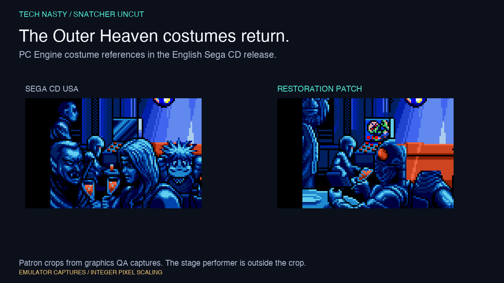
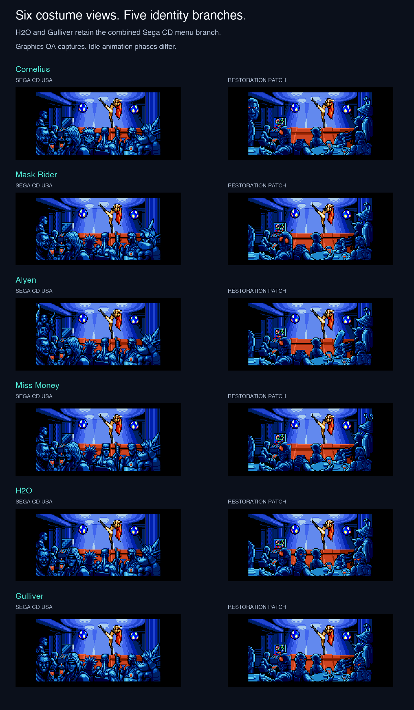
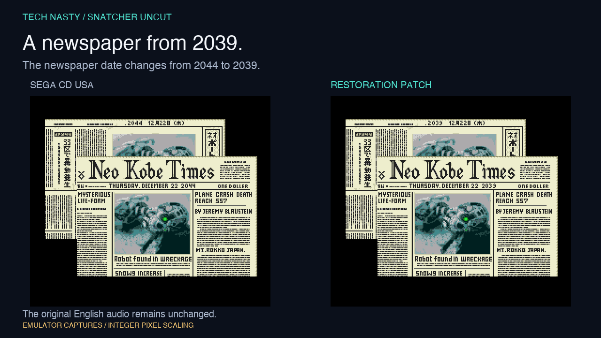
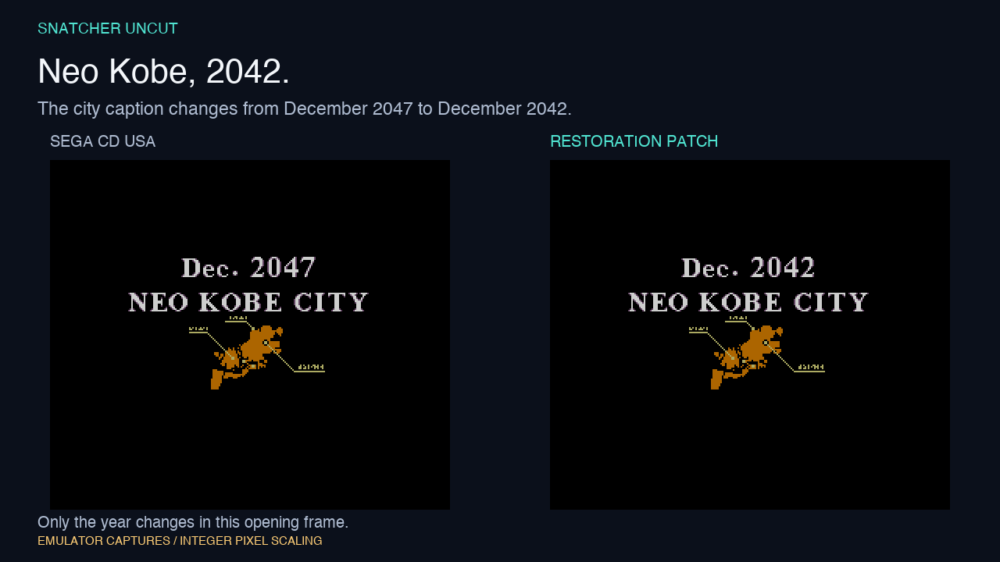
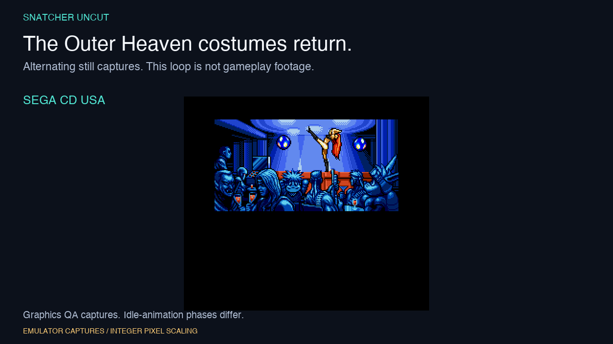
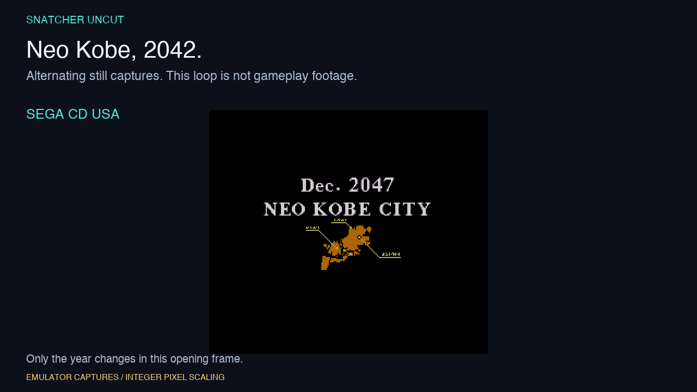
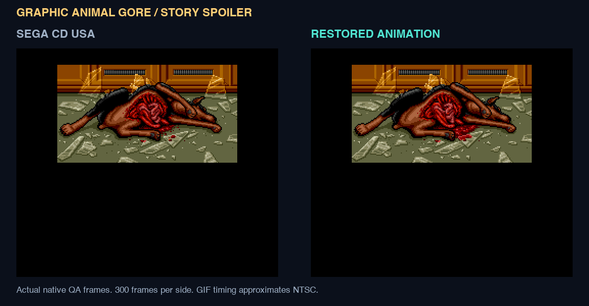

Moscow

Source and patched emulator captures. Still loops are labelled. The reel is silent. These media were recorded before the owner reported success on a U.S. Genesis Model 2 with Mega EverDrive Pro. Full console test coverage is undocumented.






This five-second clip uses existing graphics QA frames. It does not show natural story progression. GIF timing approximates the captured sequence.

PNG and GIF game pixels use nearest-neighbor integer scaling. MP4 and WebM copies use lossy video compression. The source hashes are recorded in the provenance file.
AI tools assisted engineering, research and writing. Captures come from the emulator.